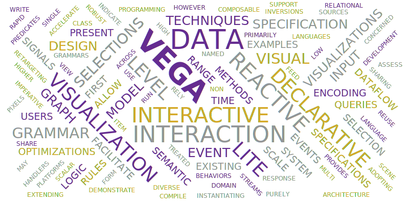
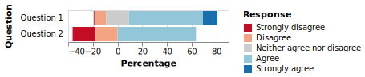
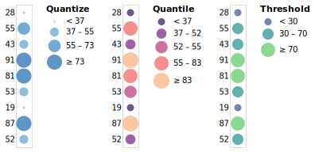
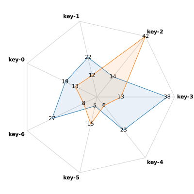

Vega Template Table of Contents Excelidraw - free style Vega - WordCloud Vega - Divergence Stacked Vega-lite Bubble Vega Radar online vega example Excelidraw - free style Vega - WordCloud  Vega - Divergence Stacked  Vega-lite Bubble  Vega Radar  Kroki PlantUML